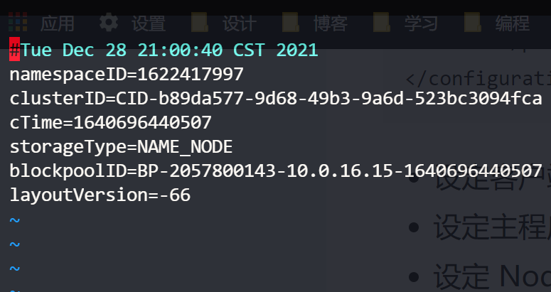

单机模式 stonealone
- grep案例
- WordCount案例
伪分布式模式
- 所有配置都是按照分布式来的
- 但是只有一台服务器
虚拟机环境准备
vim /etc/udev/rules.d/70-persistent-net.rules //修改最后为eth0
vim /etc/sysconfig/network-scripts/ifcfg-eth0
https://juejin.cn/post/6991352348471722014#heading-18
https://juejin.cn/post/6844904114980126734#heading-1
# 设置环境变量
$ vim /etc/profile
# 进入之后在文件末尾追加如下内容：
#java
export JAVA_HOME=/usr/lib/jvm/java-1.8.0-openjdk
export JRE_HOME=${JAVA_HOME}/jre
export CLASSPATH=.:${JAVA_HOME}/lib:${JRE_HOME}/lib
export PATH=${JAVA_HOME}/bin:$PATH
#hadoop
export HADOOP_HOME=/opt/software/hadoop-3.3.1
export PATH=$PATH:$HADOOP_HOME/bin
export PATH=$PATH:$HADOOP_HOME/sbin
export HADOOP_MAPRED_HOME=$HADOOP_HOME
export HADOOP_COMMON_HOME=$HADOOP_HOME
export HADOOP_HDFS_HOME=$HADOOP_HOME
export YARN_HOME=$HADOOP_HOME
export HADOOP_COMMON_LIB_NATIVE_DIR=$HADOOP_HOME/lib/native
export HADOOP_OPTS="-Djava.library.path=$HADOOP_HOME/lib"
export JAVA_LIBRARY_PATH=$HADOOP_HOME/lib/native:$JAVA_LIBRARY_PATH
# 使环境变量生效
$ source /etc/profile
<property>
<name>hadoop.tmp.dir</name>
<value>/opt/software/hadoop-3.3.1/data/tmp</value>
</property>
配置免密登录
1.编辑/etc/hosts
(下面的 IPn 表示如 192.168.1.1 格式的云服务器外网 IP 地址。注意，如果是指向本机的 IP，请用内网 IP 地址代替)
IP1 ZKK01
IP2 slave1
IP3 slave2
2.切换到hadoop用户生成id_rsa.pub(我是root用户所以不用切换和赋权)
su hadoop
cd ~
ssh-keygen -t rsa
cd ~/.ssh/
cat id_rsa.pub >> authorized_keys
#chmod 700 /home/hadoop/.ssh
#chmod 644 /home/hadoop/.ssh/authorized_keys
---以上命令所有云服务器都要运行---
3.交换共享 id_rsa.pub 的内容
（如果搭建伪分布模式，则可以略过交换共享这一步，直接进行 ssh 的测试）--我就是伪分布式
1) master 云服务器操作
scp /home/hadoop/.ssh/authorized_keys slave2:/home/hadoop/.ssh/
(2) slave1 云服务器操作
scp /home/hadoop/.ssh/authorized_keys slave3:/home/hadoop/.ssh/
(3) slave2 云服务器操作
scp /home/hadoop/.ssh/authorized_keys master:/home/hadoop/.ssh/
- 这一步的最终目的是让所有云服务器的 authorized_keys 内容都包含各自的 id_rsa.pub 信息，且内容相同。
(4) 测试配置是否成功
master 上执行命令：
ssh slave1
quit
ssh slave2
quit
slave1 上执行命令：
ssh master
quit
ssh slave2
quit
slave2 上执行命令：
ssh master
quit
ssh slave1
quit
- 需要确保所有云服务器能够相互
ssh通过。 - 第一次进行
ssh需要密码登录。输完密码之后，选择yes保存记录。之后就不再需要输入密码登录了。 - 如果出现异常情况，可重启服务再尝试：
sudo service sshd service。
修改配置文件
1. /etc/profile 配置环境变量
vim /opt/software/hadoop-3.3.1/etc/profile

#java
export JAVA_HOME=/usr/lib/jvm/java-1.8.0-openjdk
export JRE_HOME=${JAVA_HOME}/jre
export CLASSPATH=.:${JAVA_HOME}/lib:${JRE_HOME}/lib
export PATH=${JAVA_HOME}/bin:$PATH
#hadoop
export HADOOP_HOME=/opt/software/hadoop-3.3.1
export PATH=$PATH:$HADOOP_HOME/bin
export PATH=$PATH:$HADOOP_HOME/sbin
export HADOOP_MAPRED_HOME=$HADOOP_HOME
export HADOOP_COMMON_HOME=$HADOOP_HOME
export HADOOP_HDFS_HOME=$HADOOP_HOME
export YARN_HOME=$HADOOP_HOME
export HADOOP_COMMON_LIB_NATIVE_DIR=$HADOOP_HOME/lib/native
export HADOOP_OPTS="-Djava.library.path=$HADOOP_HOME/lib"
export JAVA_LIBRARY_PATH=$HADOOP_HOME/lib/native:$JAVA_LIBRARY_PATH
2. 使环境变量生效
source /etc/profile
3.进入这三个文件 每个文件都添加
vim hadoop-env.sh
export JAVA_HOME=/root/apps/jdk(JDK安装目录)
集群配置

也可以都配置在同一台机子上如果内存够的话..
四个默认核心文件
四个自定义文件：
#配置路径
/opt/software/hadoop-3.3.1/etc/hadoop
- 配置core-site.xml
<?xml version="1.0" encoding="UTF-8"?>
<?xml-stylesheet type="text/xsl" href="configuration.xsl"?>
<!-- Put site-specific property overrides in this file. -->
<configuration>
<!--指定HDFS中NameNode的地址-->
<property>
<name>fs.defaultFS</name>
<value>hdfs://ZKK01:8020</value>
<!-- 除了8020 还有9000等 -->
</property>
<!--指定Hadoop运行时产生文件的存储目录-->
<property>
<name>hadoop.tmp.dir</name>
<value>/opt/software/hadoop-3.3.1/data/tmp</value>
</property>
<!--配置HDFS网页登录使用的静态用户为zkk，可以不配置-->
<property>
<name>hadoop.http.staticuser.user</name>
<value>ZKK01</value>
</property>
</configuration>
- 配置hdfs-site.xml
<?xml version="1.0" encoding="UTF-8"?>
<?xml-stylesheet type="text/xsl" href="configuration.xsl"?>
<configuration>
<!-- nn web端访问地址 -->
<property>
<name>dfs.namenode.http-address</name>
<value>ZKK01:9870</value>
</property>
<!-- 指定HDFS副本的数量 -->
<property>
<name>dfs.replication</name>
<value>1</value>
</property>
<!-- 2nn web端访问地址 -->
<property>
<name>dfs.namenode.secondary.http-address</name>
<value>ZKK01:9870</value>
</property>
</configuration>
- 配置yarn-site.xml
<configuration>
<!-- 指定MR走shuffle-->
<property>
<name>yarn.nodemanager.aux-services</name>
<value>mapreduce_shuffle</value>
</property>
<!--指定ResourceManager地址-->
<property>
<name>yarn.resourcemanager.address</name>
<value>ZKK01</value>
</property>
<!--环境变量的继承-->
<!--3.1.3以上的版本解决了这个bug可以不配置-->
</configuration>
- 配置mapred-site.xml
<configuration>
<!--指定MapReduce程序运行在Yarn上-->
<property>
<name>mapreduce.framework.name</name>
<value>yarn</value>
</property>
</configuration>
群起集群
1. 配置Works
vim /opt/software/hadoop-3.3.1/etc/hadoop/workers
#默认为local 把local注释掉
ZKK01
2. 启动集群
- 如果集群是第一次启动，需要在ZKK01节点格式化NameNode（注意：格式化NameNode，会产生新的集群id，导致NameNode和DataNode的集群id不一致，集群找不到以往数据。如果集群在运行中报错，需要重新格式化NameNode的话，一定要先停止namenode和datanode进程，并且要删除所有机器的data和logs目录，然后再进行格式化）
[root@ZKK01 hadoop-3.3.1]# hdfs namenode -format
- 启动HDFS
[root@ZKK01 hadoop-3.3.1]# sbin/start-dfs.sh
/opt/software/hadoop-3.3.1/data/tmp/dfs/name/current

- 启动过程中遇到报错（root权限问题?）

解决办法：
-
方法一：
在Hadoop安装目录下找到sbin文件夹
在里面修改四个文件
1、对于start-dfs.sh和stop-dfs.sh文件，添加下列参数：
#!/usr/bin/env bash HDFS_DATANODE_USER=root HADOOP_SECURE_DN_USER=hdfs HDFS_NAMENODE_USER=root HDFS_SECONDARYNAMENODE_USER=root2、对于start-yarn.sh和stop-yarn.sh文件，添加下列参数：
#!/usr/bin/env bash YARN_RESOURCEMANAGER_USER=root HADOOP_SECURE_DN_USER=yarn YARN_NODEMANAGER_USER=root重新开始start…就可以。
-
方法二（推荐采用）

-
cd /etc/hadoop/ vim hadoop-env.sh -
export HDFS_NAMENODE_USER=root export HDFS_DATANODE_USER=root export HDFS_SECONDARYNAMENODE_USER=root export YARN_RESOURCEMANAGER_USER=root export YARN_NODEMANAGER_USER=root -
Now save and start yarn, hdfs service and check that it works.
我们在hadoop-env.sh文件中也可以找到如下的描述
To prevent accidents, shell commands be (superficially) locked to only allow certain users to execute certain subcommands.
为了防止发生意外，仅（部分）锁定shell命令以仅允许某些用户执行某些子命令。
It uses the format of (command)_(subcommand)_USER.For example, to limit who can execute the namenode command,export HDFS_NAMENODE_USER=hdfs
使用“命令_子命令_用户”，例如，通过使用export HDFS_NAMENODE_USER=hdfs来限制哪个用户可以执行namenode命令。参考stackoverflow上的相关讨论
-
-
Web访问NameNode Web地址
-
IP：9870（配置hdfs-site.xml时候设置的）
-
查看HDFS上存储的数据信息
-
我是用云服务器的 所以记得在云服务器防火墙管理中添加可访问端口（其他端口同理）

-
-
在配置了ResourceManager的节点（ZKK01）启动YARN
-
[root@ZKK01 hadoop-3.3.1]# sbin/start-yarn.sh -

- Web端查看YARN的ResourceManager
- IP：8088
- 查看YARN上运行的Job信息
集群基本测试
1.上传文件到集群
上传小文件
hadoop fs -mkdir /wcinput
hadoop fs -put wcinput/wc.input /wcinput

网页中操作，要在本地机配置hosts文件
2.查看HDFS在磁盘存储文件内容
- 查看：页面只是一个链接，真实的东西都存在data节点上。
cd data/tmp/dfs/data/current/BP-912934988-110.42.160.28-1641041699096/current/finalized/subdir0/subdir0/
cat blk_1073741825
zhangkeke hadoop zhangsan lisi wangwu
liuliu wangmengting xingguo
zhangkeke
keke keke keke keke keke hadoop
hive hivehive
-
拼接：默认块大小128MB如上传一个jdk tar包，其实也是放在节点上 可通过拼接命令查看

3.下载
hadoop fs -get /XXX ./
4.执行wordcount程序
hadoop jar share/hadoop/mapreduce/hadoop-mapreduce-examples-3.3.1.jar wordcount /wcinput /wcoutput
配置历史服务器
3.2以上的版本没配置也能跳转
<!--历史服务器端地址-->
<property>
<name>mapreduce.jobhistory.address</name>
<value>master:10020</value>
</property>
<!--历史服务器web端地址-->
<property>
<name>mapreduce.jobhistory.webapp.address</name>
<value>master:19888</value>
</property>
需要手动启动历史服务器
mapred --daemon start historyserver
开启日志聚集功能！
伪分布式就不用了

hadoop集群的群起脚本
https://www.codetd.com/article/1452178